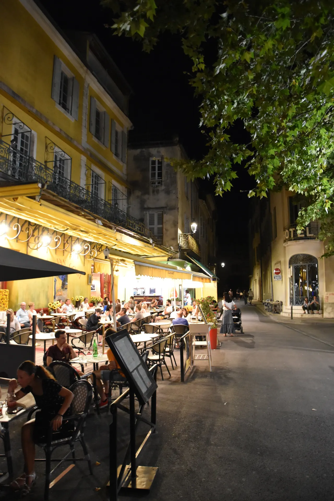

.jpg){kind=link}
관광·미술관
Nous avons déjà des billets.
이미 표가 있습니다.
누 자봉 데자 데 비예

기원전 1세기 로마 식민도시 아를의 심장이었던 고대 광장 포룸(Forum) 터 위에 자리 잡은 아를 구도심에서 가장 활기찬 카페 광장이다.
1888년 9월 빈센트 반 고흐(Vincent van Gogh)가 어두운 밤하늘 아래 노란 가스등 불빛으로 물든 야외 테라스를 묘사한 불후의 명작 『밤의 카페 테라스(Café Terrace at Night)』의 실제 배경지다.
광장 북쪽의 유서 깊은 호텔 오텔 노르-피뉘(Hôtel Nord-Pinus) 벽면에는 2천 년 전 로마 포룸 신전의 대리석 코린트 기둥 2개와 박공 일부가 건물 벽 속에 그대로 박혀 있어 고대와 근대가 공존하는 아를의 독특한 도시 지층을 증언한다.
"반 고흐가 밤하늘의 별과 노란 가스등 불빛에 매료되어 캔버스를 펼쳤던 예술적 순간과, 플라타너스 그늘 아래 펼쳐진 현대 아를 시민들의 여유로운 식사 문화를 동시에 만끽하는 중심 광장이다." 고흐의 카페 외관과 로마 신전 기둥을 둘러본 뒤, 광장 주변 비스트로 테라스에서 에스프레소나 가벼운 점심 식사를 즐기는 45~60분 코스로 이상적이다.
| 운영시간 | 재확인 |
|---|---|
| 휴무 | 재확인 |
| 예약 | 재확인 |
| 소요시간 | 75분 재확인 |
광장 북서쪽 Hôtel Nord-Pinus 파사드를 자세히 보면 2개의 거대한 로마 코린트 양식 대리석 원주와 엔타블러처(석조 상인방)가 호텔 외벽에 흡수되어 있다. 2천 년 전 이곳이 거대한 로마 신전과 포룸의 중심이었음을 보여주는 확실한 물증이다.
| 항목 | 상세 정보 |
|---|---|
| 위치 | Place du Forum, 13200 Arles |
| 광장 개방 | 상시 개방 / 무료 |
| 식사/카페 팁 | 광장 정중앙의 Café Van Gogh는 관광지 요율과 사진 인파가 많으므로, 실제 식사는 광장 주변 골목(Rue des Suisses, Rue Jouvène)의 로컬 비스트로 이용 권장 |
| 도보 연계 | Théâtre Antique에서 도보 4분, Place de la République(생트로핌)에서 도보 3분 거리로 구시가지 도보 동선의 핵심 교차점 |
Nous avons déjà des billets.
이미 표가 있습니다.
누 자봉 데자 데 비예
On peut prendre des photos ?
사진 찍어도 되나요?
옹 푀 프랑드르 데 포토
Où commence la visite ?
관람은 어디서 시작하나요?
우 코망스 라 비지트

높이 15m 거대한 지하 백색 석회암 채석장 동굴 전체를 디지털 캔버스로 변모시킨 세계 최초·최대 규모의 몰입형 미디어 아트 공간. 7,000㎡ 암벽과 바닥을 감싸는 빛과 음악의 향연.

기원전 6세기 켈트 성소에서 헬레니즘 도시를 거쳐 로마 제국의 온천 휴양도시로 번영했던 거대한 고대 발굴 유적지. 갈리아에서 가장 완벽하게 보존된 기원전 1세기 로마 영묘와 개선문 '레 장티크(Les Antiques)'.

알피유(Alpilles) 산맥 해발 245m 석회암 절벽 위에 우뚝 솟은 중세 독수리 요새 마을. 자연 암반과 성벽이 하나로 결합된 레보 성채(Château des Baux) 폐허와 올리브 계곡 대파노라마.

세계적인 식물학자 파트리크 블랑의 300㎡ 거대한 수직 정원(Mur Végétal) 외벽 아래 40여 개 프로방스 전통 식재료 좌판이 모인 아비뇽의 활기찬 실내 중앙 미식 시장.

14세기 가톨릭 교황청이 로마를 떠나 68년간 머물렀던 서유럽 최대의 중세 고딕 요새 궁전. 베네딕토 12세의 구궁전과 클레멘스 6세의 신궁전, 마테오 조바네티의 프레스코화와 히스토패드 3D 증강현실 복원.

12세기 론(Rhône) 강을 건너 교황령 아비뇽과 프랑스 왕국을 잇던 920m의 유일한 석조 다리. 소빙하기의 거센 홍수로 22개 아치 중 4개와 2층 생니콜라 예배당만 남은 유네스코 세계유산.